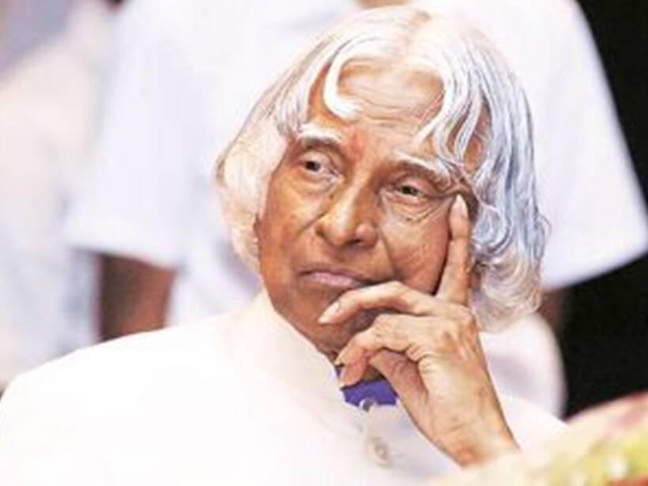
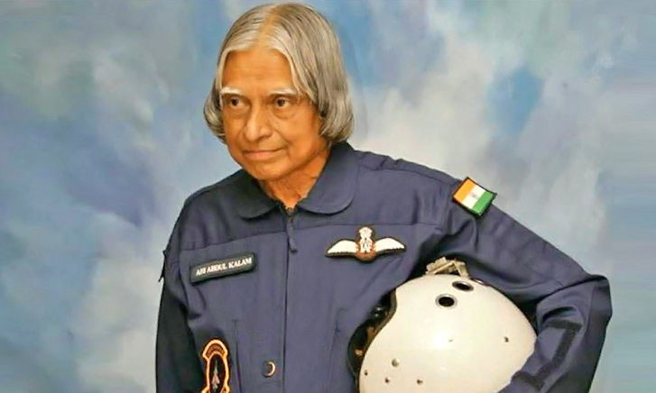
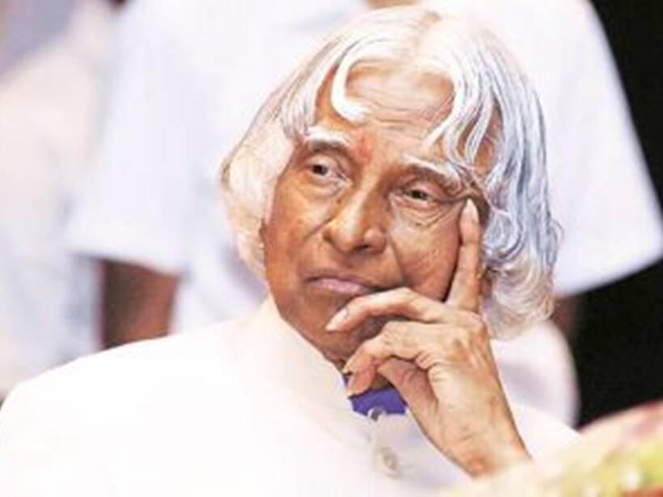
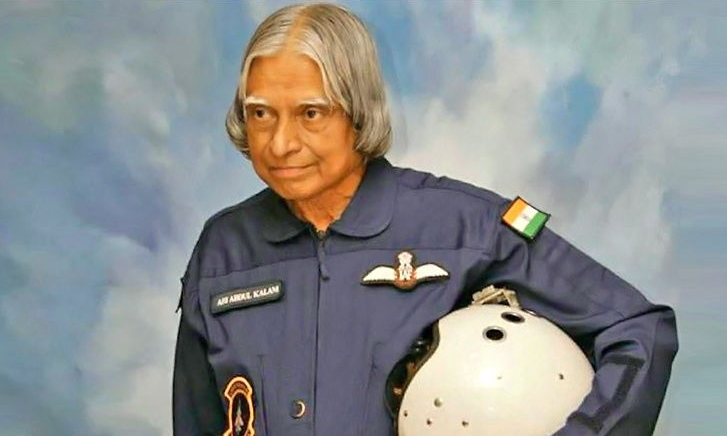

Dr.Avul Pakir Jainulabdeen Abdul Kalam

 



Here's a time line of Dr. APJ.Abdul kalam:.
Avul Pakir Jainulabdeen Abdul Kalam was an Indian aerospace scientist
who served as the 11th president of India from 2002 to 2007
He was born and raised in Rameswaram, Tamil Nadu and studied
physics and aerospace engineering
He spent the next four decades as a scientist and science administrator,
mainly at the Defence Research and Development Organisation (DRDO) and
Indian Space Research Organisation (ISRO) and
was intimately involved in India's civilian
space programme and military missile development efforts
He thus came to be known as the Missile Man of India for his work on
the development of ballistic missile and launch vehicle technology
He also played a pivotal organisational, technical, and
political role in India's Pokhran-II nuclear tests in 1998, the first
since the original nuclear test by India in 1974
Kalam was elected as the 11th president of India in 2002 with
the support of both the ruling Bharatiya Janata Party and
the then-opposition Indian National Congress.
Widely referred to as the "People's President"
he returned to his civilian life of education, writing and
public service after a single term.
He was a recipient of several prestigious awards,
including the Bharat Ratna, India's highest civilian honour.
While delivering a lecture at the Indian Institute of Management Shillong,
Kalam collapsed and died from
an apparent cardiac arrest on 27 July 2015, aged 83.
including national-level dignitaries, attended
the funeral ceremony held in his hometown of Rameswaram,
where he was buried with full state honours.